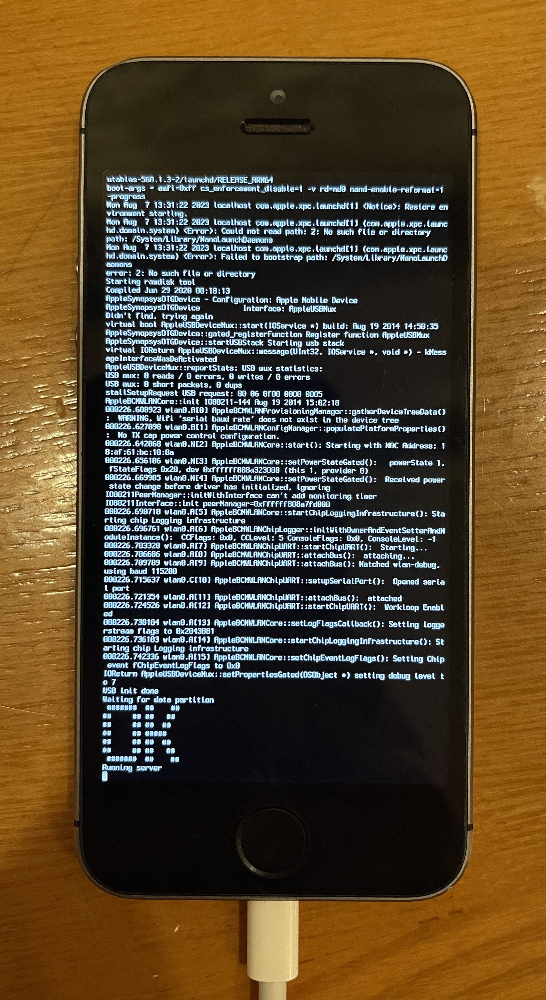

Ramdisk boot
It's time to boot the ramdisk to install the new filesystem:Put the device in DFU mode
iPwnder32 -p
Send iBSS (twice) and iBEC
irecovery -f iBSS.img4
irecovery -f iBSS.img4
irecovery -f iBEC.img4
Send and load ramdisk
irecovery -f ramdisk.img4
irecovery -c ramdisk
Send and load DeviceTree
irecovery -f devicetree.img4
irecovery -c devicetree
Send Kernelcache and bootx
irecovery -f kernelcache.img4
irecovery -c bootx
If you did everything correctly you should see verbose on screen and a large ASCII "OK" 